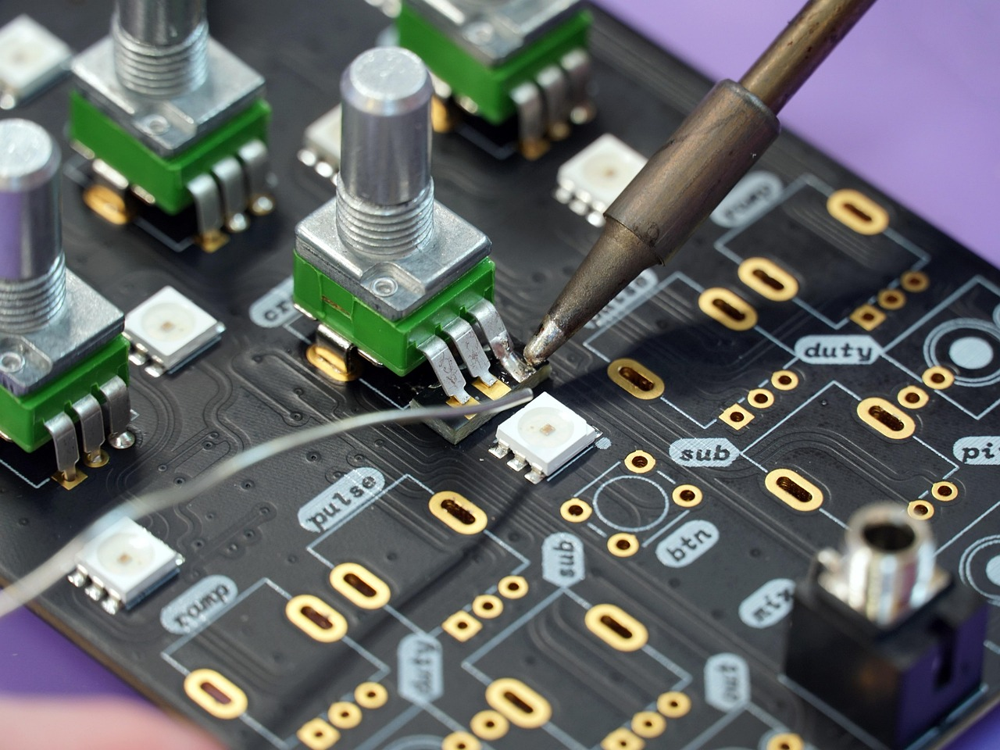

Investigar, compreender, transformar. A ciência é movimento constante, é dúvida que constrói. Ela nasce do olhar atento, da pergunta que insiste, da mente que não se acomoda. Entre cálculos silenciosos e observações incansáveis, cria pontes entre o visível e o oculto. Suas descobertas não surgem por acaso, mas do rigor, da persistência e da escuta paciente dos fenômenos. É um campo onde a precisão encontra o mistério, e onde cada resposta abre espaço para uma nova pergunta.
Galaxias Antena.
Astronomia
A astronomia é a ciência que estuda os corpos celestes e os fenômenos que ocorrem fora da Terra, como estrelas, planetas, luas, cometas, galáxias, buracos negros e a própria origem do universo. Desde a antiguidade, diferentes civilizações já observavam o céu para marcar o tempo, prever as estações e se orientar no espaço geográfico. Com o avanço da ciência, a astronomia se tornou uma área altamente tecnológica e fundamental para a compreensão do cosmos.
Ela se relaciona diretamente com a física e a matemática, dando origem a diferentes áreas de pesquisa, como a astrofísica, que investiga a composição e o funcionamento dos astros; a cosmologia, que busca entender a origem, estrutura e evolução do universo; e a astronomia planetária, que estuda planetas, luas e outros corpos do sistema solar e de outros sistemas estelares. Também se destacam a radioastronomia, que utiliza ondas de rádio para observar o espaço, e a astronomia observacional, que coleta dados por meio de telescópios e sondas espaciais.
Além de revelar os mistérios do universo, a astronomia impulsiona o desenvolvimento de tecnologias que usamos no cotidiano, como sistemas de navegação por satélite (GPS), comunicações via rádio e avanços em imagem digital. Ao estudar o espaço, a astronomia também desperta o pensamento crítico, a curiosidade científica e a consciência sobre o lugar que ocupamos no universo.
Mulher olhando microscopio.
Biologia
Biologia é a ciência que estuda a vida em todas as suas formas e níveis de organização. Ela investiga os seres vivos, como animais, plantas, fungos, bactérias e vírus, e suas interações com o ambiente. O termo vem do grego bios (vida) e logos (estudo), ou seja, "estudo da vida".
Essa ciência busca compreender desde estruturas microscópicas, como células e moléculas, até sistemas complexos, como ecossistemas e a biosfera. Por isso, a biologia é dividida em diversas áreas, como o estudo dos animais, das plantas, dos microrganismos, da hereditariedade, do funcionamento dos organismos e das relações entre os seres vivos e o meio ambiente.
Além de aprofundar nosso conhecimento sobre a vida, a biologia tem aplicações fundamentais na medicina, na agricultura, na preservação ambiental e no desenvolvimento de tecnologias. Também é uma aliada essencial no enfrentamento de problemas globais, como pandemias, mudanças climáticas e perda de biodiversidade.
Estudar biologia é compreender a vida em sua complexidade, e também reconhecer o nosso papel na preservação e no equilíbrio do planeta.
Linguagem de programação.
Computação
Computação é a área do conhecimento que estuda o processamento de informações por meio de sistemas automatizados, especialmente os computadores. Essa ciência envolve tanto os aspectos teóricos quanto práticos do funcionamento, desenvolvimento e aplicação de tecnologias que tratam dados e executam tarefas com base em instruções lógicas.
A computação engloba diversos campos, como algoritmos, programação, inteligência artificial, redes, banco de dados, engenharia de software, segurança da informação, entre outros. Ela está presente em praticamente todas as áreas da vida moderna, desde sistemas bancários, aplicativos e redes sociais até equipamentos médicos, satélites e carros inteligentes.
Mais do que apenas máquinas, a computação é uma ferramenta que amplia as capacidades humanas de criar, analisar, comunicar e resolver problemas complexos. Por isso, é considerada uma das áreas mais dinâmicas e estratégicas do mundo atual, com papel essencial na transformação digital da sociedade.

Placa de Circuito Impresso (PCI).
Engenharia
Engenharia é a área do conhecimento que aplica princípios científicos, matemáticos e técnicos para criar soluções práticas que atendam às necessidades da sociedade. Envolve o planejamento, construção, análise e otimização de sistemas, estruturas, produtos e processos em diversos setores.
É uma profissão voltada para resolver problemas do mundo real, utilizando a criatividade aliada ao raciocínio lógico. Os engenheiros atuam em áreas como construção civil, energia, transportes, tecnologia, meio ambiente, produção industrial, computação, entre outras. Cada especialidade tem seu foco, mas todas compartilham o objetivo comum de transformar ideias em projetos concretos que melhorem a vida das pessoas.
Além do conhecimento técnico, a engenharia também exige responsabilidade, visão crítica e compromisso com a segurança, a sustentabilidade e o bem-estar coletivo. Em um mundo em constante transformação, a engenharia tem papel fundamental no desenvolvimento de soluções inovadoras para os desafios atuais e futuros da humanidade.
Garota em frente a um quadro de fórmulas e diagramas matemáticos..
Matématica
Matemática é a ciência que estuda os números, as formas, as estruturas e as relações entre eles. Vai muito além das operações básicas como somar, subtrair, multiplicar e dividir. Ela oferece uma linguagem precisa para descrever padrões, resolver problemas e compreender o mundo ao nosso redor.
Presente em praticamente todas as áreas do conhecimento, a matemática é essencial na tecnologia, na engenharia, na economia, nas ciências naturais e até mesmo na arte e na música. Por meio da lógica, da abstração e do raciocínio, ela nos permite tomar decisões, desenvolver inovações e entender fenômenos complexos.
Desde os cálculos simples do cotidiano até as teorias mais avançadas, a matemática é uma ferramenta poderosa para interpretar a realidade e construir o futuro.
Euação de Einsten.
Física
Física é a ciência que estuda a natureza e busca compreender como o universo funciona. Ela investiga desde as menores partículas que compõem a matéria até os movimentos dos planetas e galáxias. Ao observar fenômenos como a luz, o som, a gravidade, o calor e a eletricidade, a física explica leis e princípios que regem tudo ao nosso redor.
Por meio da experimentação, da matemática e da lógica, a física transforma perguntas sobre o mundo em conhecimento aplicável. É graças a ela que desenvolvemos tecnologias como computadores, celulares, aviões e até satélites. Ao mesmo tempo, a física também nos convida a refletir sobre o tempo, o espaço e a origem do universo.
É uma ciência fundamental para o avanço do conhecimento humano, contribuindo para inovações em diversas áreas e despertando o nosso senso de curiosidade sobre o funcionamento do mundo.